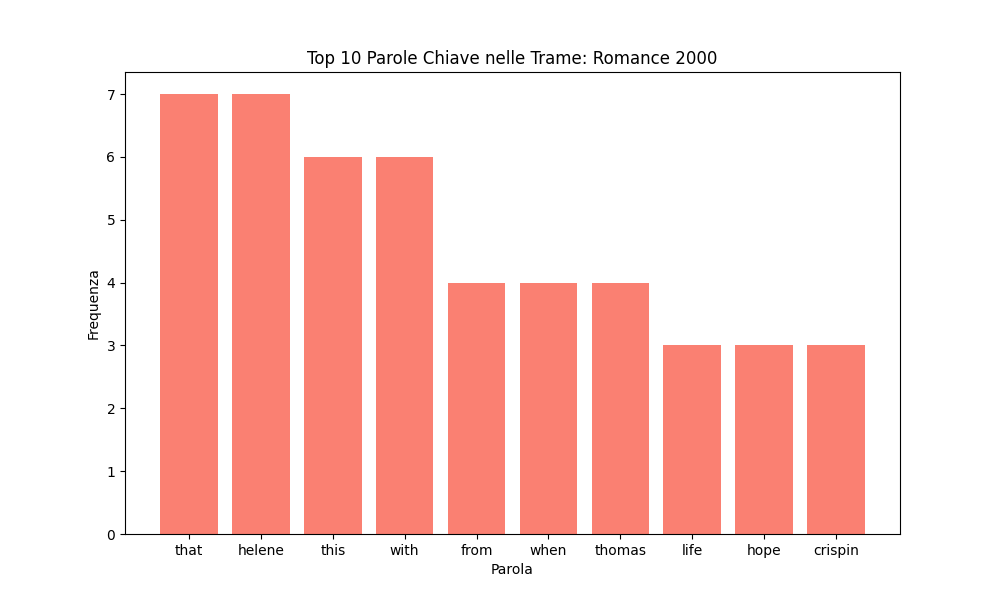
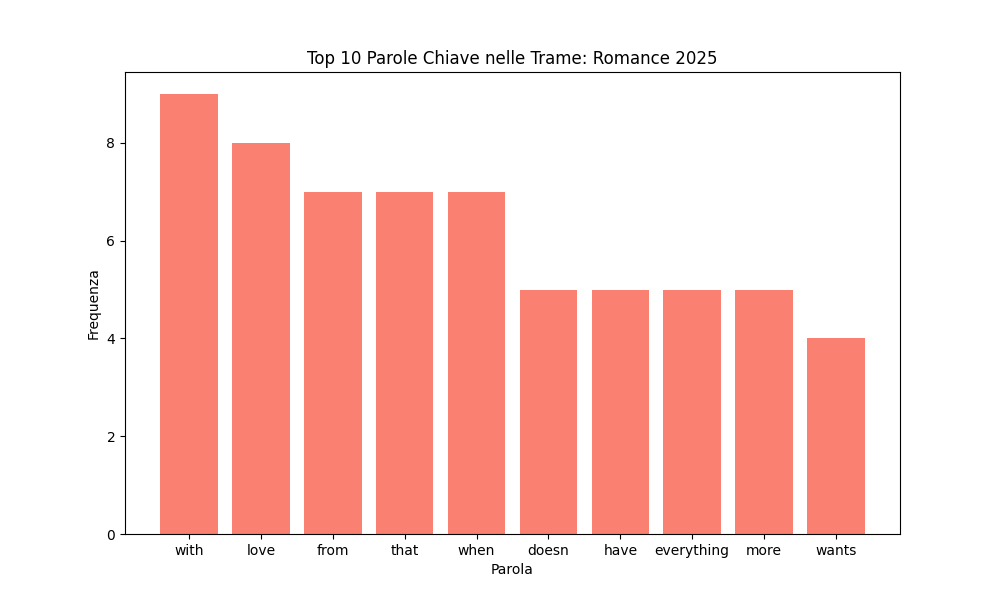
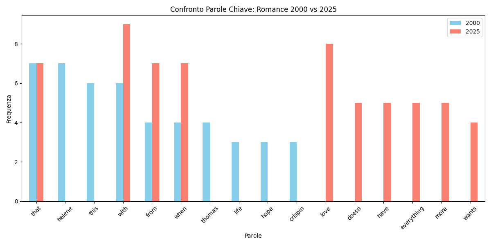
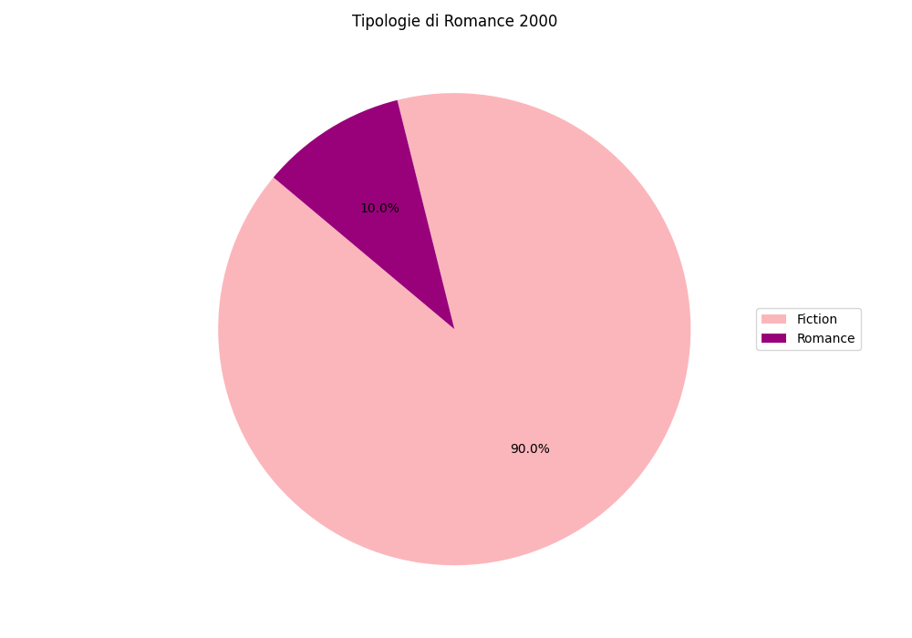
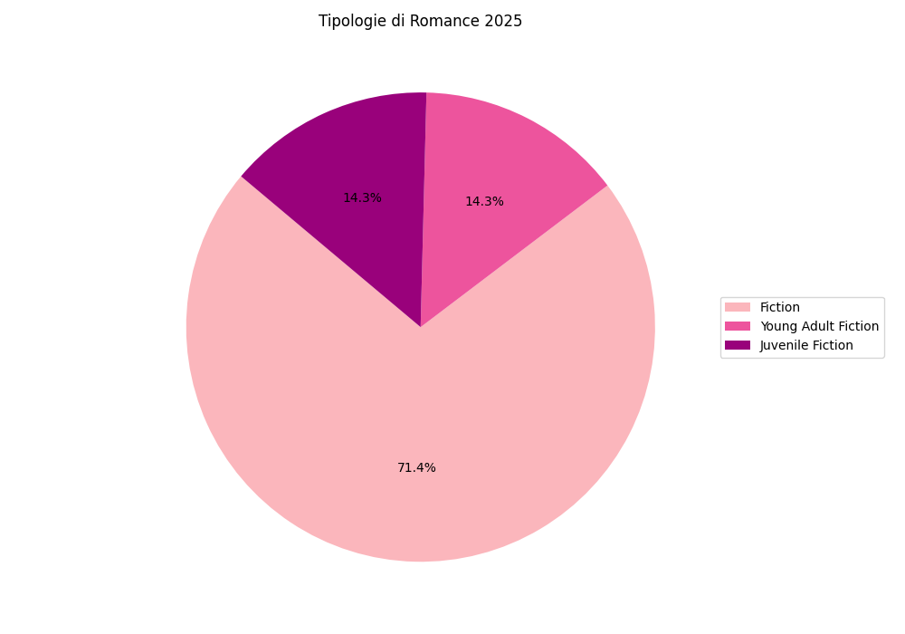

Questo progetto analizza l'evoluzione diacronica del genere Romance, prendendo in esame due segmenti temporali: l'anno 2000 e l'anno 2025. Utilizzando l'API di Google Books come risorsa digitale principale, abbiamo selezionato un campione significativo di 10 titoli per ciascuna annata. L'analisi si è concentrata sulla decostruzione dei metadati (sottogeneri e categorie), sull'analisi semantica delle trame tramite estrazione di parole chiave, e su una valutazione visiva delle tendenze editoriali, per comprendere come sia cambiato — o rimasto immutato — il gusto del pubblico e la proposta narrativa in questo quarto di secolo.
| Titolo | Genere | Autore | Anno di pubblicazione | Prezzo | Trama |
|---|---|---|---|---|---|
| The Best Man | Fiction | Linda Turner | 2000 | NaN | The Best Man by Linda Turner released on May 25, 2000 is available now for purchase. |
| Dr. Mom and the Millionaire | Fiction | Christine Flynn | 2001 | NaN | Dr. Mom And The Millionaire by Christine Flynn released on Jan 25, 2000 is available now for purchase. |
| Wonderful and Wicked | Fiction | Carola Dunn, Valerie King, Isobel Linton | 2000 | NaN | From indiscreet rendezvous to public scandal, from dangerous kisses to duels at dawn, readers will be captivated by Regency England's most irresistible rascals -- in this collection of romantic stories about three wonderful and wicked rakes. |
| Fairy-tale Brides | Romance | Irene B. Brand | 2000 | NaN | What happens when fairy-tale adventures meet modern life? Find out in this unique novella collection, aas four women hope for the "happily ever after" of a God-ordained marriage. |
| Drop-Dead Gorgeous | Fiction | Lyn Ellis | 2000 | NaN | Drop-Dead Gorgeous by Lyn Ellis released on Apr 24, 2000 is available now for purchase. |
| The Water Nymph | Fiction | Michele Jaffe | 2001 | NaN | When Sophie Champion first meets the notorious "Earl of Scandal" Crispin Foscari, it's while she's looking for clues in the suspicious death of a loved one. But when she's implicated in a murder, her only hope lies with Crispin--who has a mysterious agenda of his own. Locked in mutual mistrust, Sophie and Crispin strike a seductive bargain that binds them together in their search for answers. |
| Finders Keepers | Fiction | Catherine Palmer | 1999 | NaN | Elizabeth Hayes hopes to expand her shop by purchasing the Chamber House next door. The resulting feud drags the town into a battle of historic value vs. personal property. |
| Teeth of the Dog | Fiction | Jill Ciment | 1998 | NaN | The author of the critically hailed "Half a Life" steps boldly into world-class literary territory with this tightly structured yet richly expansive literary thriller that will call to mind the work of Graham Greene and Paul Bowles's "The Sheltering Sky." Thomas, a renowned American anthropologist, his much younger wife Helene, and Finster, a young, culturally shipwrecked AMR (American mercantile riffraff), as he's known locally, enact a tense personal drama of love and tragedy against the much larger historical drama of the Melanesian island of Vanduu, a steaming crucible where East and West, fundamentalist piety and free market fire, decay and sterility augur the future of the world. Helene has lured Thomas to Vanduu in the desperate hope that its tropical splendor can miraculously heal the fracture that has cleaved their lives: Thomas's health is failing, and Helene simply can't accept that she might lose him. Unable to cope with the gulf of loneliness that his illness has opened between them, Helene finds herself growing more and more desperate as they tour this lush, clamorous paradise that turns out to be no paradise at all. And then Finster appears--young, louche, popping up everywhere Thomas and Helene happen to be, dogging Helene like a lovesick puppy. When a tragic mishap caused by their dance of three accidentally takes the life of a Vanduuan child, Helene, separated from both men, becomes a fugitive left to fend for herself on this troubled, surreal, inexplicably foreign speck of land in the middle of the Pacific Ocean. With a distilled emotional power and prose so tactile you can feel the eroticism and heat on every page, this riveting tale enacts large themes--the inevitable consequences of the hegemony of the American dream, the inexorable loss of a deep, adult love compared to the hopped-up sex-for-sale enticements Finster offers in its place, and a glimpse into what progress, with its spiraling allurements, has truly forfeited." |
| Riding the Storm | Fiction | Pamela Oldfield | 2000 | NaN | Kate Harper is one of the new breed of 1930s women - bright, talented and building a future in publishing. She is quite unprepared for the mutual feelings she has for Robert Dengaul, a much older author. |
| The Smuggler's Bride | Fiction | Bess Willingham | 2000 | NaN | Lady Rosalind emerges from an empty wine barrel in the cellar of a terribly attractive stranger. The mystery smuggler turns out to be Rafe Lawless, Viscount Pershing. Rafe is strongly attracted to Rosalind, but she is the daughter of his fierce opponent. And she could send him to the executioner with just one word. |
| Titolo | Genere | Autore | Anno di pubblicazione | Prezzo | Trama |
|---|---|---|---|---|---|
| By Invitation Only | Young Adult Fiction | Alexandra Brown Chang | 2025 | NaN | Piper Woo Collins, a hard-working teen hoping to land a college scholarship, collides with Chapin Buckingham, a nepo baby looking to prove herself, at the world's most high-profile debutante ball in Paris, in a young adult romance. |
| Bingsu for Two | Juvenile Fiction | Sujin Witherspoon | 2025 | NaN | Teens River and Sarang must fake a relationship online to save Sarang's Korean family café from going under. |
| The Mademoiselle Alliance | NaN | Natasha Lester | 2025 | NaN | NaN |
| Flirting Lessons | Fiction | Jasmine Guillory | 2025 | NaN | Avery Jensen is almost thirty, fresh off a breakup, and she's tired of always being so uptight and well-behaved. She wants to get a hobby, date around (especially women), flirt with everyone she sees, wear something not from the business casual section of her closet--all the fun stuff normal people do in their twenties. One problem: Avery doesn't know where to start. She doesn't have a lot of dating experience, with men or women, and despite being self-assured at wo... |
| Along Came Amor | Fiction | Alexis Daria | 2025 | NaN | From the international bestselling author of You Had Me at Hola and A Lot Like Adiós comes a steamy love story of a divorced schoolteacher who discovers that her perfect no-strings fling is anything but... No strings After Ava Rodriguez's now-ex-husband declares he wants to "follow his dreams"--which no longer include her--she's left questioning everything she thought she wanted. So when a handsome hotelier flirts with her, Ava vows to stop overthinking and embrace the opportunity for an epic one-night-stand complete with a penthouse suite, rooftop pool, and buckets of champagne. No feelings Roman Vasquez's sole focus is the empire he built from the ground up. He lives and dies by his schedule, but the gorgeous stranger grimacing into her cocktail glass inspires him to change his plans for the evening. At first, it's easy for Roman to agree to Ava's rules: no strings, no feelings. But one night isn't enough, and the more they meet, the more he wants. No falling in love Roman is the perfect fling, until Ava sees him at her cousin's engagement party--as the groom's best man, no less! Suddenly, maintaining her boundaries becomes a lot more complicated as she tries to hide the truth of their relationship from her family. However, Roman isn't content being her dirty little secret, and he doesn't just want more, he wants everything. With her future uncertain and her family pressuring her from all sides, Ava will have to decide if love is worth the risk--again. This emotional rollercoaster ride of a novel will have you laughing and crying and believing in happily-ever-afters! |
| Love Arranged | Fiction | Lauren Asher | 2025 | NaN | The final book in the Lakefront Billionaires series by New York Times bestselling author Lauren Asher. LORENZO Five months. Two people "in love." One fake relationship with an expiration date. Sounds simple enough. But Lily Muñoz and I have history. So, when she volunteers to date me so I can improve my public image, I should say no. Our past complicates everything, but since my future depends on her, I agree to her plan. Faking it for the public is expected, but falling in love in private? That isn't part of our arrangement. LILY Using a dating app sounded like a great idea, up until I discovered Lorenzo Vittori was my match. My sister's boyfriend hates him. My mom is wary of him. And me? I've spent the last year avoiding him. By when my business is threatened, I'm forced into teaming up with Lorenzo to save it. All I need to do is help him win the mayoral election, and he promises to protect my shop. It doesn't take me long to learn that I'm not cut out for fake relationships, but Lorenzo? He isn't capable of a real one. |
| King of Envy | Fiction | Ana Huang | 2025 | NaN | The fifth book in the deliciously steamy Kings of Sin series from #1 New York Times bestselling author Ana Huang, where bad boy billionaires must atone for their sins in order to earn their love stories. He had everything he could've wanted...except her. Dangerous. Powerful. Reclusive. Vuk Markovic is notorious for shunning human interactions. The scarred billionaire rarely talks, and he has no interest in relationships outside his small but trusted circle. His only exception? Her. The beauty to his beast, the object of his obsession. He saw her first. He wanted her first. But now, she's engaged to his oldest friend--and the closer the wedding looms, the more he's torn between loyalty and desire. She should be his...and he might just risk it all to have her. *** Beautiful. Successful. Glamorous. To the world, supermodel Ayana Kidane leads the perfect life. Her career has skyrocketed, and she's engaged to one of New York's most eligible bachelors. What people don't know is that the engagement is only a business arrangement. He gets his inheritance when they marry; she gets the money she needs to leave her abusive agency. Pretending to be in love should be easy--until she finds herself increasingly drawn to her fiancé's enigmatic best man. Vuk thrills and terrifies her in equal measure. She knows she should stay away, but when her wedding is thrown into chaos, he's the only person who makes her feel safe... Until his past catches up with them and threatens everything they love. |
| Well, Actually | Fiction | Mazey Eddings | 2025 | NaN | Eva Kitt never expected to be the host of Sausage Talk, interviewing B-list celebrities over lukewarm hot dogs, instead of pursuing the journalism career she dreamed of. But when Eva’s impromptu public call out of her college ex goes viral, she’s thrust into the spotlight. It doesn’t help said ex is Rylie Cooper, a beloved social media personality that has built a platform on deconstructing toxic masculinity and teaching men how to be good partners. Forced to confront Rylie on a live episode of Sausage Talk, he offers Eva a deal: allow him to take her on a series of dates to make up for his toxic behavior, then debrief them on his channel to show he’s changed. Eva refuses to play nice, but agrees to the scheme to advance her own career and continue defaming Rylie’s good name. When these manufactured dates start to feel real, Eva has to wonder if the boy that broke her heart has become the man that might heal it. |



Nota sull'evoluzione lessicale: Dall'analisi del confronto emerge un mutamento semantico significativo. Nelle trame del 2025, le parole chiave riflettono una dimensione del desiderio amoroso più esplicita, pragmatica e assertiva (es. "Have", "Want", "More"), suggerendo una narrativa focalizzata sulla conquista e sull'urgenza del sentimento. Al contrario, nel 2000, il lessico era orientato verso una sfera emotiva più astratta, improntata alla speranza e alla linearità dell'attesa (es. "Hope", "With").


Evoluzione delle Categorie: La trasformazione dei sottogeneri evidenzia come il Romance abbia oggi assorbito nuove etichette editoriali. Se nel 2000 dominavano le categorie generiche di Fiction e Romance, nel 2025 assistiamo a una frammentazione verso lo Young Adult e il Juvenile Fiction.
È utile distinguere questi termini: la Fiction è la narrativa di pura invenzione, mentre il Romance si focalizza sulla relazione sentimentale. Lo Young Adult (YA) si rivolge a lettori dai 12 ai 18 anni, esplorando l'identità e la crescita; la Juvenile Fiction (o narrativa per l'infanzia) copre invece fasce d'età più giovani, con tematiche più orientate all'avventura e alla formazione elementare. Questa migrazione indica che il desiderio amoroso è diventato il motore centrale anche per il mercato dei giovani lettori.